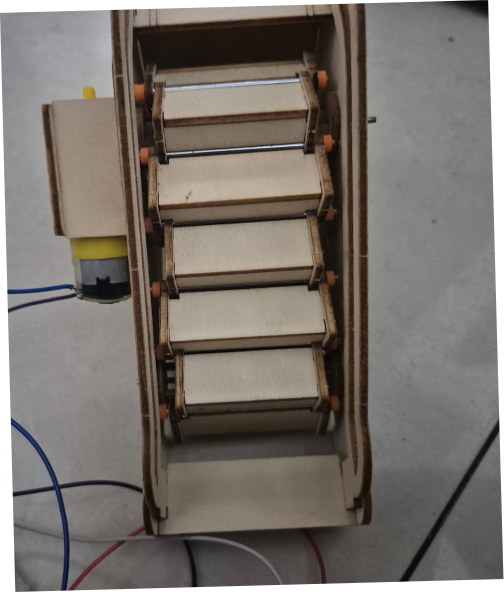
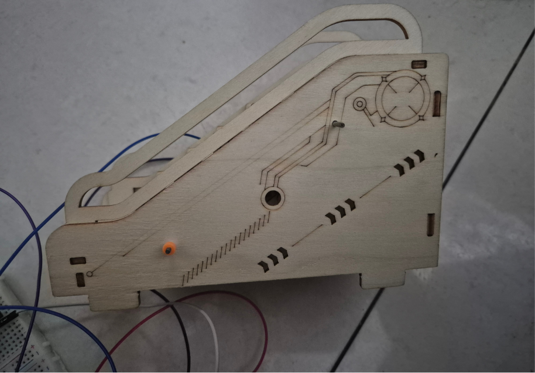
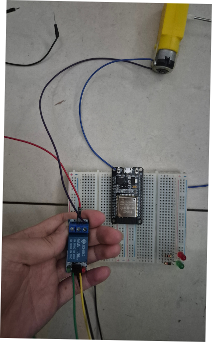
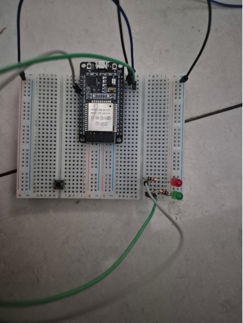
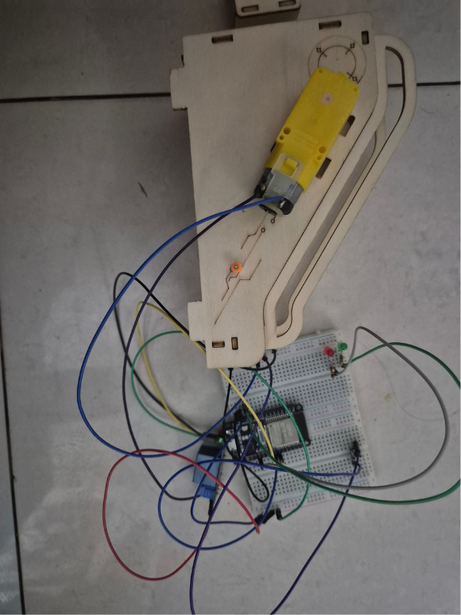

01. Acionamento
Um comando ou uma condição programada pode iniciar o funcionamento do mecanismo.
Conheça a proposta de movimentação automatizada desenvolvida para a nossa maquete.
Uma escada rolante é um sistema mecânico que transporta pessoas entre diferentes níveis por meio de degraus em movimento contínuo. Em uma instalação real, seu funcionamento envolve mecanismos, acionamento elétrico e diversos recursos de segurança.
Na nossa maquete, a escada representa uma aplicação de automação e movimentação mecânica em um ambiente residencial. A implementação específica depende do mecanismo e dos componentes escolhidos pela equipe.


Um comando ou uma condição programada pode iniciar o funcionamento do mecanismo.
O motor fornece o movimento necessário ao sistema, conforme o tipo de mecanismo utilizado.
O mecanismo transmite o movimento aos elementos móveis da escada.
A programação define como o sistema responde aos comandos e às condições previstas no projeto.
A demonstração poderá apresentar o acionamento, o movimento dos degraus e a integração com a maquete.
O projeto consistiu em construir o sistema de acionamento de uma escada rolante, no qual um botão liga e desliga o motor e dois LEDs indicam o estado do sistema. Onde ESP32 lê o botão e controla o relé, que liga ou desliga o motor, já que o microcontrolador não fornece corrente suficiente para alimentá-lo diretamente. O motor foi ligado aos terminais COM e NO do relé, de modo que ele só gira quando o relé é acionado. Um LED indica que o motor está em funcionamento e outro indica que a fonte de energia está ligada e o sistema está operando. Cada LED recebeu um resistor 220ohm para limitar a corrente e evitar sua queima. Na programação, o botão foi configurado com resistor de pull-up interno e com debounce, para evitar leituras falsas causadas pela vibração dos contatos. A cada clique, o sistema alterna entre motor ligado e desligado, acionando o relé. Durante os testes, surgiu um problema que ao conectar a fonte, o motor ligava e não desligava, e o botão não tinha efeito. Foram testadas diferentes ligações e verificou-se que, com o módulo relé alimentado por 3,3V, o botão funcionava, mas com 5V o LED do relé ficava sempre aceso. A causa foi a diferença entre a tensão do sinal do ESP32 (3,3V) e a tensão de alimentação do módulo (5V), o nível alto de 3,3V não era suficiente para o módulo entender o comando de desligar. A solução foi alterar o código para que, no estado desligado, o pino do relé seja configurado como entrada, deixando o próprio módulo desligar o relé por seu pull-up interno. Para ligar, o pino passa a ser saída em nível baixo, que é o nível que aciona esse tipo de módulo. Com essa modificação, o botão passou a controlar corretamente o motor.
O código será inserido após a equipe disponibilizar a implementação utilizada para controlar a escada. A explicação acompanhará as funções realmente presentes no programa.
const int BOTAO = 5;
const int RELE = 18;
const int LED_MOTOR = 2;
const int LED_ENERGIA = 13;
bool motorLigado = false;
int leituraAnterior = HIGH;
int estadoBotao = HIGH;
unsigned long tempoDebounce = 0;
const unsigned long intervaloDebounce = 50;
void ligarRele() {
pinMode(RELE, OUTPUT);
digitalWrite(RELE, LOW);
}
void desligarRele() {
pinMode(RELE, INPUT); }
void setup() {
Serial.begin(115200);
pinMode(BOTAO, INPUT_PULLUP);
pinMode(LED_MOTOR, OUTPUT);
pinMode(LED_ENERGIA, OUTPUT);
desligarRele(); // começa com o motor desligado
digitalWrite(LED_MOTOR, LOW);
digitalWrite(LED_ENERGIA, HIGH);
}
void loop() {
int leitura = digitalRead(BOTAO);
if (leitura != leituraAnterior) {
tempoDebounce = millis();
}
if (millis() - tempoDebounce > intervaloDebounce) {
if (leitura != estadoBotao) {
estadoBotao = leitura;
if (estadoBotao == LOW) {
motorLigado = !motorLigado;
if (motorLigado) {
ligarRele();
digitalWrite(LED_MOTOR, HIGH);
} else {
desligarRele();
digitalWrite(LED_MOTOR, LOW);
}
}
}
}
leituraAnterior = leitura;
Os testes ajudam a verificar se o mecanismo se movimenta conforme o esperado e se os componentes estão corretamente integrados. Nesta seção, serão apresentados os testes realizados e as melhorias desenvolvidas pela equipe.


